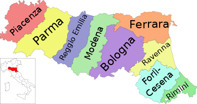

Emilia-Romagna
L'Emilia-Romagna (IPA: /eˈmilja roˈmaɲɲa/[9]; Emélia, Emégglia o Emilia[10] in emiliano e Rumâgna in romagnolo) è una regione italiana a statuto ordinario dell'Italia nord-orientale di 4 464 819 abitanti[4].
Ritorna alla mappa